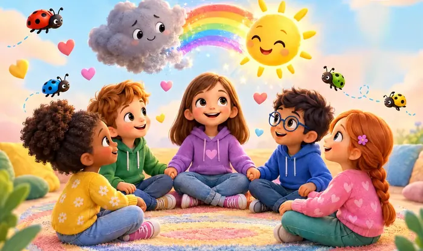

Programjaink
Minden gyerek más, ezért nálunk nincs két egyforma fejlesztés
Egyéni foglalkozás, kis csoport, kutyás délután vagy nyári tábor a tó mellett. Hét program 5-16 éves gyerekeknek és a szüleiknek, Tatán. Ha nem tudják eldönteni, melyik a jó, segítünk.


Az összes program
-
fotóhelyFotó: gyerekkéz betűkártyákkal az asztalon

Egyéni fejlesztés
Ha az olvasás, az írás, a számolás vagy a figyelem nehezebben megy, mint a többieknek. Képességfelméréssel kezdünk, és a gyermek erősségeire építve, kis lépésekben haladunk. Diszlexia és diszgráfia esetén megelőzésre és korrekcióra is.
Miben segít?
- tanulási nehézség
- diszlexia
- diszgráfia
- figyelem
- finommozgás
-

Iskolaelőkészítő
Az iskolakezdés előtti évben játékosan erősítjük azt, amire az első osztályban szükség lesz: a figyelmet, a kéz ügyességét, a beszédet és a feladattartást. Abban is segítünk, ha bizonytalanok, menjen-e már iskolába.
Miben segít?
- iskolaérettség
- feladattartás
- ceruzafogás
- diszlexia-megelőzés
-


MOZAIK szorongásoldó műhely
Feszült, félénk, nehezen megnyíló kisiskolásoknak. Mind a tíz alkalom egy természeti kép, például a rét, a víz vagy az erdő köré épül, mesével, mozgással, alkotással és relaxációval. A csoportok jellemzően csütörtökönként 17 órától találkoznak.
Miben segít?
- szorongás
- hasfájós reggelek
- visszahúzódás
- önbizalom
-
fotóhelyFotó: nagyobb gyerekek (12+) csoportban beszélgetnek

Merész Macska
Nagyobb gyerekeknek és kamaszoknak, akiket a félelmeik visszatartanak dolgozat előtt, szerepléskor vagy új helyzetekben. Kipróbálható technikákat tanulnak a feszültség kezelésére, és lépésről lépésre gyakorolják a szembenézést azzal, amitől tartanak.
Miben segít?
- vizsgadrukk
- szereplési félelem
- aggódás
- kerülés
-


Kutyás foglalkozások Zafírral
Zafír, a terápiás golden retriever elfogadó jelenlétében a gyerekek könnyebben megszólalnak, barátkoznak és kezelik az érzéseiket. Az óvodás csoport jellemzően szerdánként 16:15-től, a kisiskolás 17:30-tól találkozik.
Miben segít?
- társas kapcsolódás
- beilleszkedés
- bátortalanság
- érzelemszabályozás
-
fotóhelyFotó: gyerekek a tóparton, nyári fényben (Öreg-tó)

Barátságtábor
Tíz nyár óta a Csodabogár tábora. Tematikus napokon mesélünk, zenélünk, alkotunk és csapatban játszunk, és marad idő a mezítlábas szabad játékra is a tóparton. A barátkozás itt a fő program.
Miben segít?
- barátkozás
- bátorság
- együttműködés
- szabad játék
-
fotóhelyFotó: két bögre az asztalon, mellette jegyzetfüzet, háttérben a műhely

Szülőkonzultáció
Ha tanácsot kérnének tanulási nehézség, viselkedési gondok, szorongás vagy ADHD kapcsán. Önök ismerik legjobban a gyermeküket, mi ehhez adunk szakmai hátteret és kézzelfogható ötleteket az otthoni napokhoz.
Miben segít?
- nevelési kérdések
- ADHD a mindennapokban
- szakértői vélemény értelmezése
- házi feladat körüli viták
Erre most nincs külön programunk, de írjanak nekünk, és megnézzük, hogyan tudunk segíteni.

Segítünk választani
Nem tudják, melyik a jó? Ezt nem kell egyedül eldönteniük.
Írják le pár mondatban, mi aggasztja Önöket, vagy hívjanak fel. Elmondjuk, melyik programot javasoljuk, és miért. Van, amikor egy egyéni felmérés vagy egy szülői beszélgetés a jó kezdés, és csak utána jön egy csoport.